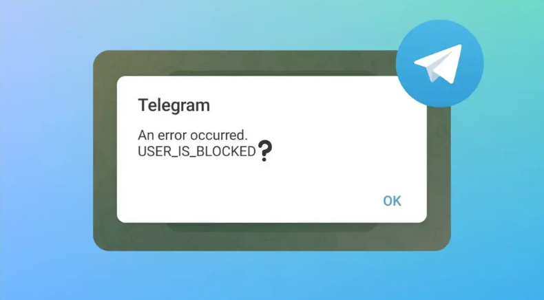

Telegram 最新动态

如何将 WhatsApp 群聊移至 Telegram
WhatsApp最近的隐私政策更新让用户开始寻找替代方案。除了 Signal Messenger 之···
13 05.2024

如何在 WhatsApp、Telegram 和 Signal 上秘密聊天
不用说，隐私是许多人在使用 WhatsApp、Telegram 和 Signal 等即时通讯应用时的···
11 05.2024

Telegram 照片未显示在手机图库中的 5 个修复
修复 Telegram 照片未在图库中显示的问题Telegram 应用程序需要相关权限才能下载照片并···
09 05.2024

如何停止 Telegram 或 Signal 上的联系人加入警报
停止联系加入电报或信号警报当您的联系人列表中的某人加入 Signal 或 Telegram 时，您会···
06 05.2024
释放手机 Telegram 空间的 3 种最佳方法
释放 Telegram 空间的 3 种最佳方法清除 Telegram 中的所有缓存文件Telegra···
03 05.2024
如何在手机和桌面上隐藏最后一次在 Telegram 中看到的内容
我们看到Telegram用户数据库急剧上升，因为大部分人从 WhatsApp 转向加入和探索 tel···
30 04.2024
了解 Telegram 频道，如何创建和使用它？
就像WhatsApp一样，Telegram 用户可以向个人或群组发送消息，该平台还允许创建频道。然而···
26 04.2024
Mac 上的 Telegram 与 Telegram Lite：有什么区别？
当您在 Mac App Store 上搜索Telegram客户端时，您会发现同一应用程序的两个版本 ···
23 04.2024

查看Telegram 上是否有人屏蔽您的方法
检查 Telegram 是否被屏蔽的标志当联系人屏蔽您时，Telegram 不会通知您。这可能会使您···
19 04.2024
如何解决 Telegram 上“该频道无法显示”的问题
您在 Telegram 上收到“此频道无法显示”错误吗？以下是完整的错误消息：“该频道无法显示，因为···
17 04.2024
如何在 iPhone 上使用 Siri 阅读和发送 Telegram 消息
无论是在 iPhone 还是 iPad 上，Siri 都是全能助手。它可以从 iMessage 读取···
16 04.2024
Telegram 连接时卡住：终极修复指南
Telegram 是 WhatsApp 的绝佳替代品，在某些隐私功能方面甚至更好。 WhatsApp···
15 04.2024
如何在 Telegram Messenger 中玩游戏
消息服务 Telegram 因其安全措施而脱颖而出：用户可以在多个平台上相互发送即时消息，同时受到端···
14 04.2024
如何在 iPhone 和 Android 上订阅 Telegram Premium
Telegram Premium 终于开始向 iPhone 和 Android 用户推出。尽管该应用···
13 04.2024

如何在 Telegram 上添加自定义通知声音
在 WhatsApp 强迫人们接受其政策的惨败之后，许多用户确实从 WhatsApp 迁移到了 Te···
11 04.2024